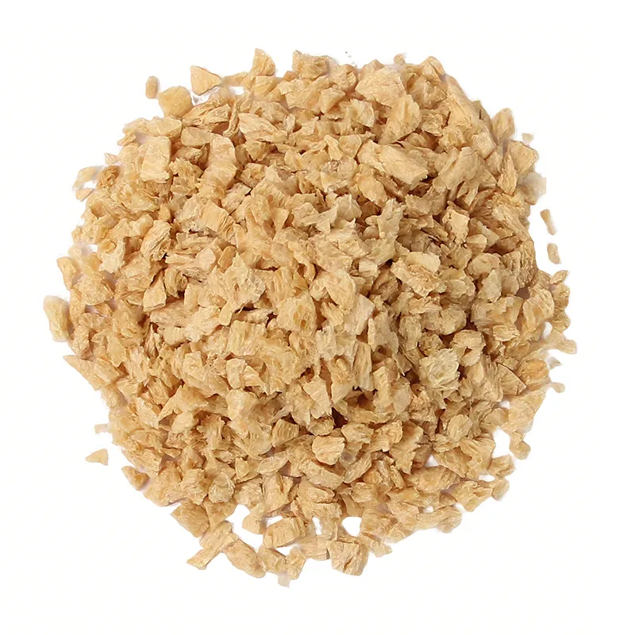
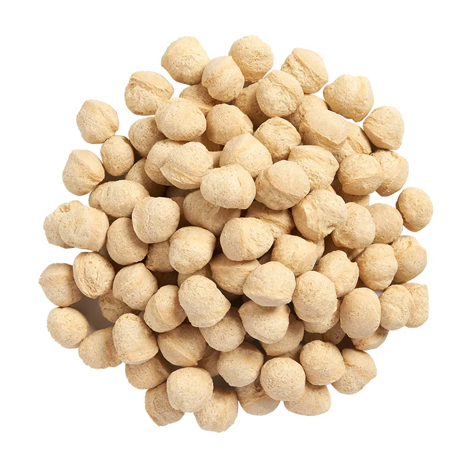
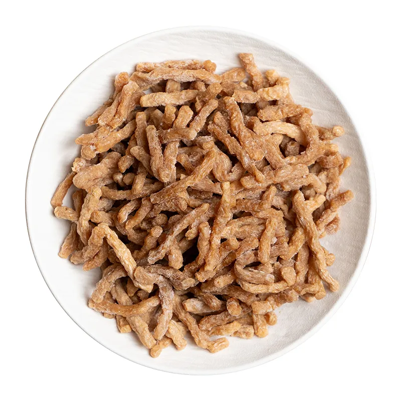

Different forms.
Different applications.
TVP can be supplied in different physical forms to suit different processing requirements.

TVP Granules
Small textured protein pieces suitable for sausage, meatball and other processed food applications.

TVP Flakes
Flake-shaped textured protein designed for food formulations where a distinctive texture and structure are required.

TVP Chunks
Larger textured protein pieces suitable for applications requiring a more substantial bite and visible structure.

TVP Strands
Fibrous, strand-like textured protein suitable for fillings and food products where a meat-like fibrous structure is desired.